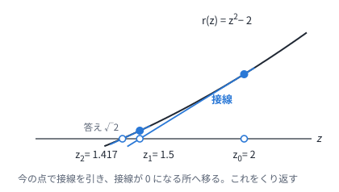
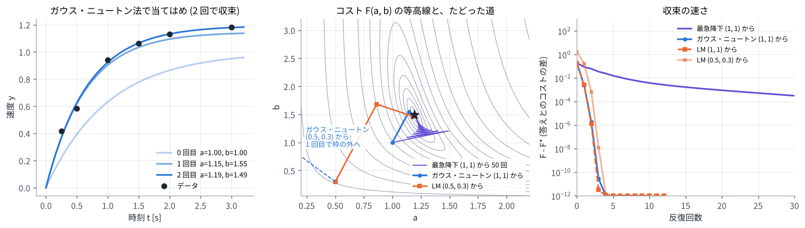

02. 最小二乗とガウス・ニュートン法
この章のゴール
- コストを「残差の 2 乗和」\(F(z) = \frac12 \lVert r(z) \rVert^2\) の形で書ける
- 残差が 1 つのときのニュートン法 (接線で 0 を探す) が分かる
- ガウス・ニュートン法の式 \(J^\top J\,\Delta = -J^\top r\) を導けて、各項の意味を説明できる
- LM 法の減衰 \(\mu\) の役割が分かる
つながり MPC の多くは、01 章 のコストを「残差の 2 乗和」と見て、この章のガウス・ニュートン法やその仲間で解きます。さらに 06 章 では、MPPI の更新が、この章の LM 法と同じ形の式になることを見ます。
0. この章で使う記号
| 記号 | 意味 |
|---|---|
| \(z\) | 変数 (\(n\) 個の数を並べたベクトル)。MPC では入力の列 \(U\) |
| \(r(z)\) | 残差ベクトル。0 にしたい「ずれ」を \(m\) 個並べたもの |
| \(F(z) = \frac12 \lVert r(z) \rVert^2\) | コスト (残差の 2 乗和の半分。\(\frac12\) は微分をきれいにするためで、答えは変わらない) |
| \(J = \partial r / \partial z\) | ヤコビアン。\(m \times n\) の行列で、\(i\) 行 \(j\) 列は「\(z_j\) を少し動かすと \(r_i\) がどれだけ変わるか」 |
| \(\Delta\) | 1 回の反復で \(z\) を直す量 |
| \(\mu\) | LM 法の減衰 (慎重さのつまみ) |
1. 最小二乗: ずれを並べて 2 乗和にする
1.1 例: モーターの速度の立ち上がり
モーターに一定の電圧をかけると、速度は \(y(t) = a\,(1 - e^{-bt})\) のように立ち上がります。\(a\) は最終的な速度、\(b\) は立ち上がりの速さです。6 回測ったデータから \(a\) と \(b\) を求めます。
| \(t\) [s] | 0.25 | 0.5 | 1.0 | 1.5 | 2.0 | 3.0 |
|---|---|---|---|---|---|---|
| \(y\) | 0.416 | 0.582 | 0.941 | 1.062 | 1.131 | 1.182 |
測定ごとのずれ (残差) は \(r_i(a, b) = a\,(1 - e^{-b t_i}) - y_i\) です。ノイズがあるので 6 個のずれを全部 0 にはできません。そこで、2 乗和を最小にします。
1.2 01 章のコストも同じ形
01 章 のコストは、重みの平方根をかけたずれの 2 乗の和に書き直せます。
ですから、これらを全時刻ぶん縦に並べたものを残差ベクトル \(r(U)\) とすれば、01 章の最適制御問題もこの章の形 \(\lVert r(U) \rVert^2\) になります (04 章)。
1.3 残差が \(z\) の 1 次式なら一発で解ける
残差が \(r(z) = Az - b\) の形 (\(A\) は定数の行列) なら、コストは \(z\) の 2 次関数なので、勾配を 0 とおけば答えが出ます。
これを 正規方程式 と呼びます。03 章 の線形 MPC は、この形で解けます。残差が非線形 (1.1 の例や、2 輪ロボット) のときは、このあと説明するように反復が必要です。
2. 残差が 1 つ: ニュートン法 (接線で 0 を探す)
まず一番簡単な場合として、変数も残差も 1 つで、\(r(z) = 0\) を解く問題を考えます。今の点 \(z\) のまわりで \(r\) を接線 (1 次式) で近似し、接線が 0 になる所へ移ります。

\(r(z) = z^2 - 2\) (答えは \(\sqrt2 = 1.414214\cdots\)) で、\(z_0 = 2\) から始めると、次のようになります。
| 反復 | \(z\) | \(r(z)\) | 答えとの差 |
|---|---|---|---|
| 0 | 2.000000 | 2.000000 | 0.586 |
| 1 | 1.500000 | 0.250000 | 0.0858 |
| 2 | 1.416667 | 0.006944 | 0.00245 |
| 3 | 1.414216 | 0.000006 | 0.0000021 |
答えに近づくほど接線の近似が正確になり、合っている桁数がおよそ倍々に増えます (2 次収束)。一方、答えから遠い所では接線の近似が外れ、遠くへ飛ばされることがあります。下のデモの「arctan z」で、\(z_0\) を 1.4 より大きくして確かめてください。
3. ガウス・ニュートン法
3.1 考え方: 残差を 1 次式で近似して、1.3 の方法で解く
残差が \(m\) 個、変数が \(n\) 個の一般の場合に広げます。手順は 3 つです。
- 今の \(z\) のまわりで、残差を 1 次式で近似する: \(r(z + \Delta) \approx r + J\Delta\)
- 近似した残差の 2 乗和を最小にする \(\Delta\) を求める。\(\Delta\) の 1 次式の残差なので、1.3 の正規方程式で一発で求まる
- \(z \leftarrow z + \Delta\) として、1 に戻る
式 (1) の導き方: \(\frac12 \lVert r + J\Delta \rVert^2 = \frac12 r^\top r + \Delta^\top J^\top r + \frac12 \Delta^\top J^\top J \Delta\) を \(\Delta\) で微分して 0 とおくと、\(J^\top r + J^\top J\Delta = 0\) です。
3.2 各項の意味
| 項 | 意味 |
|---|---|
| \(J\) (\(m \times n\)) | \(i\) 行目は「変数を少しずつ動かしたとき、残差 \(r_i\) がどれだけ変わるか」 |
| \(g = J^\top r\) | コストの勾配 \(\nabla F\)。どちらへ動くとコストが増えるか |
| \(J^\top J\) (\(n \times n\)) | コストの曲がり具合 (ヘッセ行列) の近似。曲がりがきつい方向には少し、ゆるい方向には大きく動く |
変数も残差も 1 つなら、\(\Delta = -r\,r' / r'^2 = -r / r'\) となり、2 章のニュートン法と同じになります。
3.3 数値で 1 回やってみる
1.1 の例で、\((a, b) = (1, 1)\) から始めます。残差の微分は \(\partial r_i / \partial a = 1 - e^{-b t_i}\)、\(\partial r_i / \partial b = a\, t_i e^{-b t_i}\) です。
残差がすべて負 (モデルがデータより小さい) なので、\(a\) と \(b\) を両方大きくする向きに動きます。新しい点は \((a, b) = (1.146, 1.552)\) で、コストは次のように減ります。
| 反復 | 0 | 1 | 2 | 3 |
|---|---|---|---|---|
| \(F\) | 0.187 | 0.00473 | 0.00216 | 0.00216 |
2 回でほぼ収束し、\(a = 1.193\)、\(b = 1.491\) になります (データは \(a = 1.2\)、\(b = 1.5\) にノイズを足して作りました)。
3.4 ニュートン法との違い: 2 階微分を捨てている
\(F = \frac12 \lVert r \rVert^2\) の本当のヘッセ行列は次の形です。
ニュートン法はこれを全部使いますが、ガウス・ニュートン法は第 2 項を捨てます。そのおかげで
- 2 階微分を計算しなくてよい
- \(J^\top J\) は必ず半正定値なので、\(J\) の列が独立なら \(\Delta\) は必ずコストが下がる向きを向く
という利点があります。捨てた項は残差 \(r_i\) に比例するので、答えの近くで残差が小さいときや、残差が 1 次式に近いときは小さく、ニュートン法とほぼ同じ速さで収束します。演習 2 では、答えの近くで \(J^\top J\) の対角が 3.65 と 0.25 なのに対し、捨てた項は 0.001 程度でした。
3.5 最急降下法との比較
勾配の逆向きに一定の歩幅で進む最急降下法 \(\Delta = -\alpha J^\top r\) と比べます (演習 2)。

- 最急降下法 (紫) は、等高線が細長い谷をジグザグに進み、50 回でも収束しきらない
- ガウス・ニュートン法 (青) は、曲がり具合 \(J^\top J\) で歩幅と向きを補正するので、2 回で答えに着く
4. LM 法: うまくいかないときは慎重に
4.1 ガウス・ニュートン法が暴れる場合
答えから遠い所では 1 次式の近似が外れ、\(\Delta\) が大きすぎてコストが上がることがあります。演習 2 で \((a, b) = (0.5, 0.3)\) から始めると、ガウス・ニュートン法のコストは 1.7 → 25 → 0.23 → 7,500,000 → … と暴れます (図の中央の点線)。
4.2 減衰を足す
そこで、\(J^\top J\) に減衰の項を足します。
- \(\mu\) が大きいと \(\Delta \approx -\frac{1}{\mu} D^{-1} J^\top r\) となり、小さな歩幅の最急降下法 (慎重)
- \(\mu\) が小さいとガウス・ニュートン法 (大胆)
\(\mu\) は次の規則で毎回調整します。この教材のコードでは、下がったら 1/3 倍、上がったら 4 倍にしています。
- 式 (2) で \(\Delta\) を求め、\(F(z + \Delta)\) を計算する
- 下がったら受け入れて、\(\mu\) を小さくする (次はもっと大胆に)
- 上がったら捨てて、\(\mu\) を大きくして 1 に戻る (もっと慎重に)
これを Levenberg–Marquardt (LM) 法 と呼びます。\((0.5, 0.3)\) からでも、コストは 1.7 → 0.17 → 0.0028 → 0.0022 と 3 回で収束します。
4.3 方法のまとめ
| 方法 | 1 回のステップ | 必要なもの | 答えの近くでの速さ |
|---|---|---|---|
| 最急降下法 | \(\Delta = -\alpha J^\top r\) | 1 階微分 | 遅い |
| ガウス・ニュートン法 | \(\Delta = -(J^\top J)^{-1} J^\top r\) | 1 階微分 (\(J\)) | 残差が小さいほど速い |
| LM 法 | \(\Delta = -(J^\top J + \mu D)^{-1} J^\top r\) | 1 階微分 (\(J\)) | \(\mu\) で上の 2 つの間を動く |
| ニュートン法 | \(\Delta = -(\nabla^2 F)^{-1} \nabla F\) | 2 階微分 | 速い (2 次収束) |
4.4 変数に上下限があるとき
入力には上下限があります。この教材のコードでは、ステップのあとに上下限で切る (射影する) という簡単な方法を使っています。きちんと扱うには、上下限を制約にした 2 次計画問題 (QP) を毎回解きます (03 章、04 章 の SQP)。
5. MPC への橋渡し
- 線形モデルと 2 次コストなら、残差は入力の列 \(U\) の 1 次式なので、ガウス・ニュートン法は 1 回で答えに着く → 03 章
- 非線形モデルなら、ガウス・ニュートン法 (LM 法) を反復する → 04 章
- そのときのヤコビアン \(J\) は、モデルの微分の積 (連鎖律) で作る → 04 章
演習 2
python exercises/ex02_gauss_newton.py
ニュートン法の表、ガウス・ニュートン法の 1 回目の数値 (3.3 節)、3 つの方法の収束を出力し、図を作ります。
試してみること:
- 出発点を
(2.0, 0.2)や(1.0, 6.0)に変えて、ガウス・ニュートン法と LM 法を比べる levenberg_marquardt()のmu / 3とmu *= 4を変えると、収束はどう変わるか
理解度チェック
- \(F(z) = \frac12 \lVert r(z) \rVert^2\) の勾配を \(J\) と \(r\) で書くと?
- ガウス・ニュートン法が捨てている項は何か。なぜ捨ててもうまくいくことが多いのか?
- \(J^\top J\) が逆行列を持たないと何が困るか。LM 法はそれをどう助けるか?
- LM 法で \(\mu\) を大きくすると、ステップはどうなるか?
- \(r(z) = z^2 - 2\) で \(z_0 = 1\) から始めると、ニュートン法の \(z_1\) はいくつか?
- 残差がすべて \(z\) の 1 次式なら、ガウス・ニュートン法は何回で収束するか?
答えの例
- \(\nabla F = J^\top r\)。
- 本当のヘッセ行列の第 2 項 \(\sum_i r_i \nabla^2 r_i\) (2 階微分の項)。残差 \(r_i\) に比例するので、答えの近くで残差が小さいときや、残差が 1 次式に近いときは小さい。
- 式 (1) が解けない (ある方向に動いても残差が変わらず、どれだけ動けばよいか決まらない)。LM 法は \(\mu D\) を足すので、\(J^\top J + \mu D\) は (\(\mu > 0\) で \(D\) が正の対角なら) 必ず逆行列を持つ。
- 歩幅が小さくなり、向きは勾配の逆向き (最急降下法) に近づく。
- \(r(1) = -1\)、\(r'(1) = 2\) なので \(z_1 = 1 - (-1)/2 = 1.5\)。
- 1 回。1 次式の近似が正確なので、式 (1) の答えがそのまま最小点になる (1.3 の正規方程式と同じ)。
もっと知りたい人へ
- J. Nocedal, S. J. Wright, Numerical Optimization, 2nd ed., Springer, 2006. 第 10 章が最小二乗問題 (ガウス・ニュートン法、LM 法) です。
- K. Madsen, H. B. Nielsen, O. Tingleff, Methods for Non-Linear Least Squares Problems, 2nd ed., IMM, DTU, 2004. LM 法の \(\mu\) の調整などが丁寧に書かれた講義ノートです。